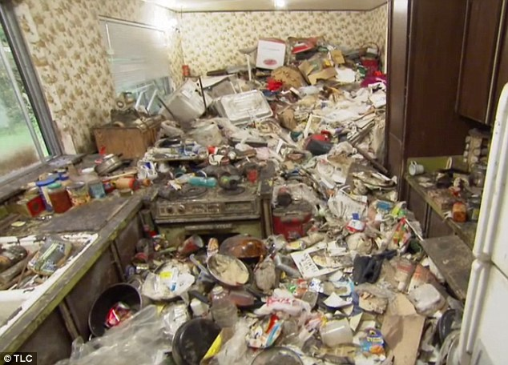
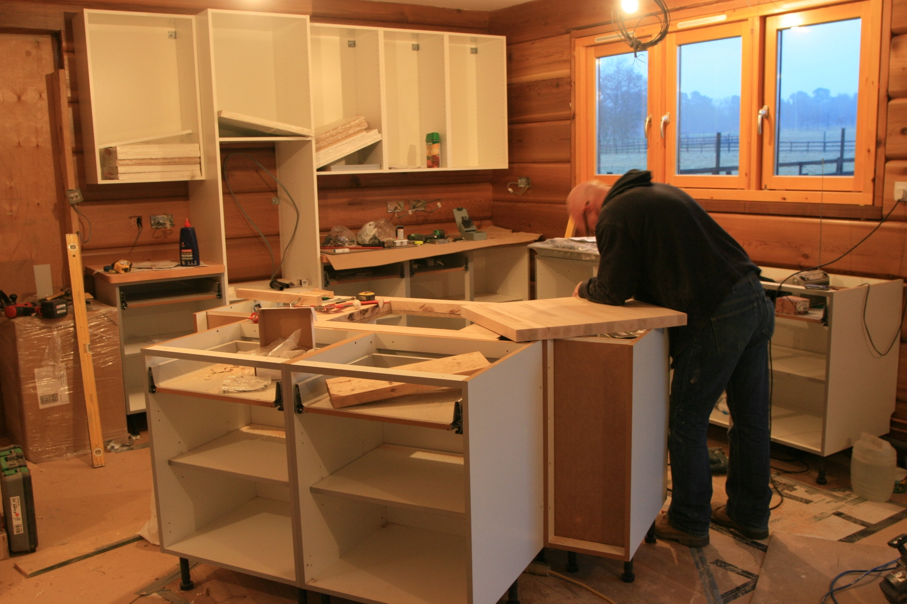
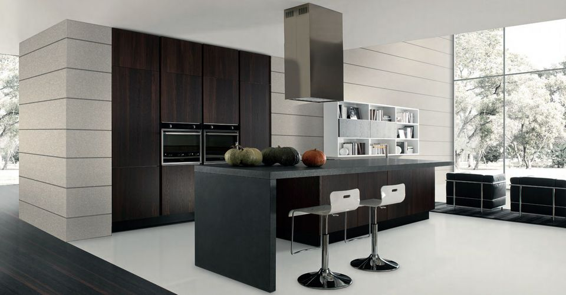

Modern Interior
Before:
With their minimalist cabinetry, neutral color palettes, and metallic accents, these contemporary kitchens have a subtle elegance that will never go out of style. They blend aspects of modern design with other styles, including traditional and industrial, for a look that's current and sleek, but not sterile. A pop of color—whether it’s on the furniture, in a bowl of fresh fruit, or in a vase of flowers—ensures that these contemporary kitchen designs still feel warm and welcoming
During the constraction:
With their minimalist cabinetry, neutral color palettes, and metallic accents, these contemporary kitchens have a subtle elegance that will never go out of style. They blend aspects of modern design with other styles, including traditional and industrial, for a look that's current and sleek, but not sterile. A pop of color—whether it’s on the furniture, in a bowl of fresh fruit, or in a vase of flowers—ensures that these contemporary kitchen designs still feel warm and welcoming
After:
With their minimalist cabinetry, neutral color palettes, and metallic accents, these contemporary kitchens have a subtle elegance that will never go out of style. They blend aspects of modern design with other styles, including traditional and industrial, for a look that's current and sleek, but not sterile. A pop of color—whether it’s on the furniture, in a bowl of fresh fruit, or in a vase of flowers—ensures that these contemporary kitchen designs still feel warm and welcoming